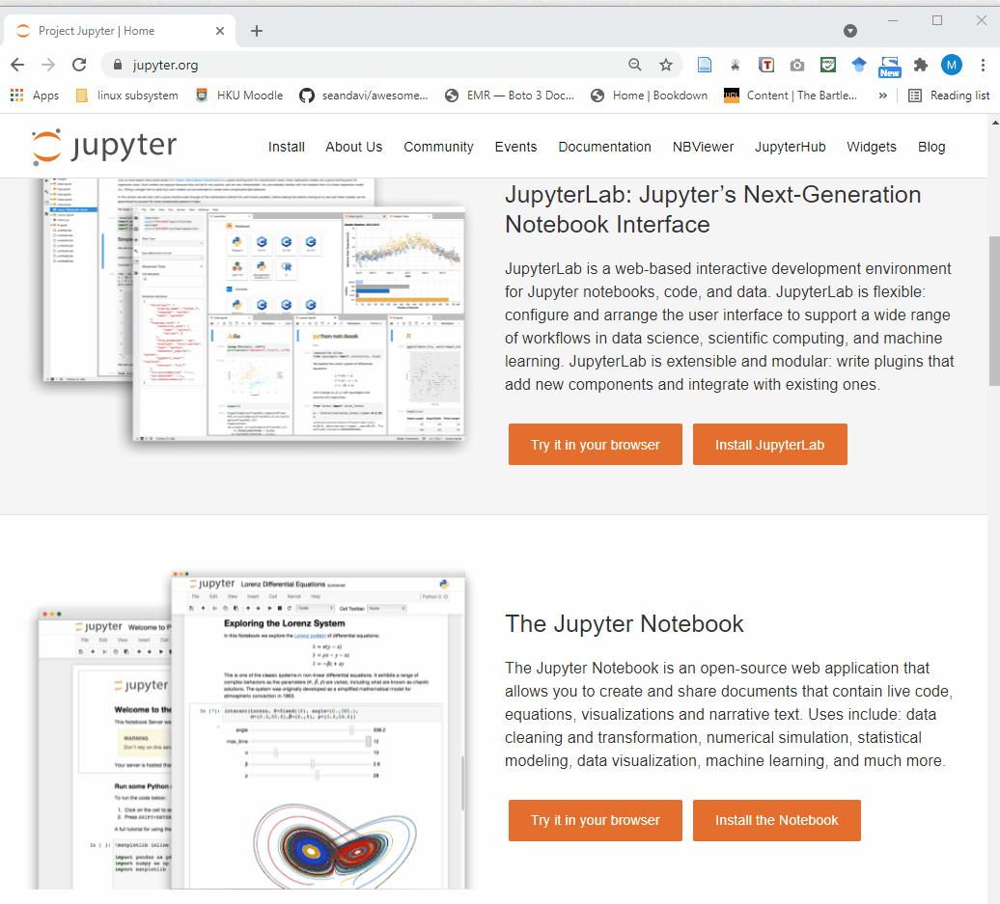

Chapter 2 Start
2.1 Online access
2.1.1 Load an online Jupyter noteboook
You can simply use Jupyter notebook through the Jupyter website. Click on the “Try it in your browswer” buttom and you can click on “Try Classic Notebook” and you will see the loading page and open a Jupyter notebook.
You can create a new script by:
File –> New Notebook –> Python3

2.1.2 Jupyter Notebook from Jupyter Lab
You can also launch a notebook from jupyter lab. Compared with the Jupyter notebook, JupyterLab is more of an IDE(Integrated Development Environment)-like experience. The classic Jupyter Notebook only consists of a file browser and an editor view and JupyterLab contains more features and provides useful widgets. 
2.2 Jupyter on your computer
Jupyter runs codes for many languages, while Python is a requirement. Jupyter Notebook contains basic Scientific Computing and Data Science packages. For simplicity, you can install Python and Jupyter using Anaconda, you can follow the Anaconda instruction in their website.
Install on Windows
Install on Mac
Install on Linux